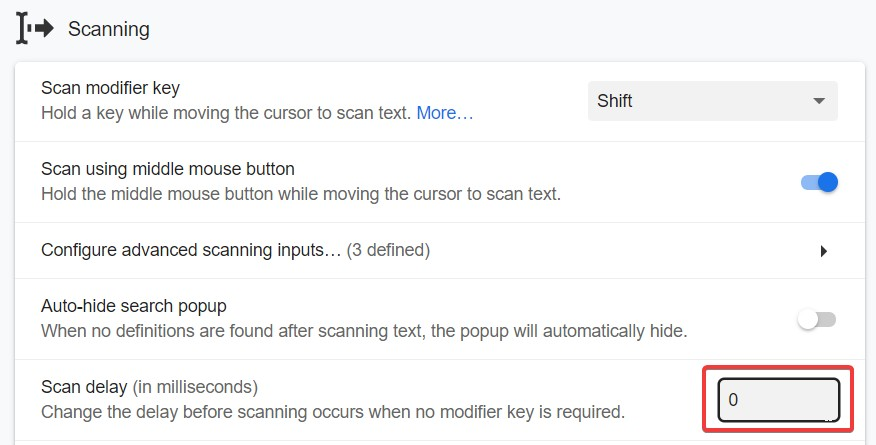
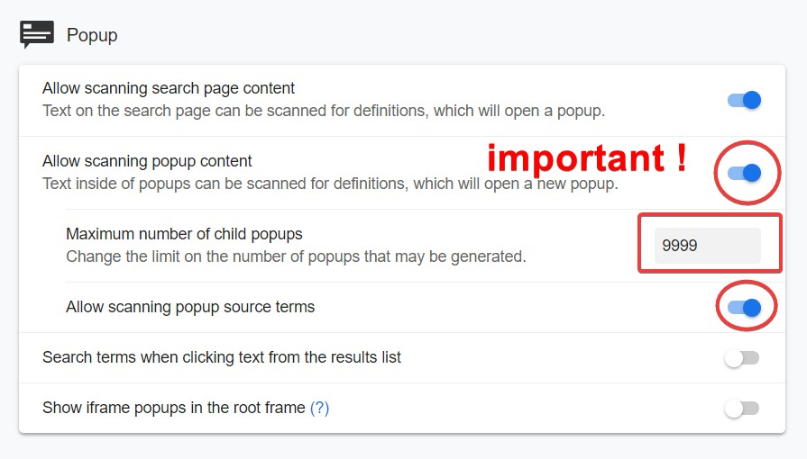

Panduan Monolingual¶
Pembelajar Menengah
Panduan ini ditujukan untuk pembelajar "menengah".
Panduan ini akan membahas apa itu transisi monolingual dan mengapa Anda harus melakukannya, berbagai media untuk mengakses kamus monolingual, serta cara mendekati penggunaan kamus monolingual. Panduan ini cukup panjang. Namun tetap sederhana, hanya saja pengaturan awal yang terasa panjang.
Apa itu transisi monolingual¶
Transisi monolingual adalah ketika Anda “bertransisi" untuk terbiasa dengan kamus monolingual, sering kali dengan bantuan kamus bilingual sebagai alat bantu. Kamus monolingual adalah kamus yang mendefinisikan kata-kata dalam bahasa tersebut dengan bahasa itu sendiri. Misalnya, Oxford Dictionary adalah kamus monolingual bahasa Inggris. Kōjien (広辞苑) adalah kamus monolingual bahasa Jepang. Situs seperti Jisho.org menggunakan kamus bilingual Jepang-Inggris yang dikenal sebagai “JMdict (English)”. Jisho.org bukan kamus itu sendiri, hanya portal yang mengakses JMdict. Jadi ingatlah itu.
Mengapa Anda harus menggunakan kamus monolingual¶
Kamus monolingual membantu Anda menghindari membuat asosiasi yang salah dengan kata-kata dari bahasa ibu Anda (mungkin bahasa Inggris) ke bahasa Jepang. Anda mungkin berpikir, oh, bagaimana jika saya bukan orang Inggris? Jika Anda tidak menggunakan kamus monolingual, maka Anda akan membuat asosiasi yang salah juga, tidak peduli apa bahasa ibu Anda. Bagaimana jika saya orang Jerman dan saya menggunakan Wadoku (kamus bilingual Jepang-Jerman)? Hal yang sama. Anda akan tetap memiliki masalah ini. Tidak ada bahasa yang dapat mengekspresikan bahasa Jepang lebih baik daripada bahasa Jepang itu sendiri.
Apa yang Anda maksud dengan “asosiasi yang salah”?¶
Definisi bilingual, 90% dari waktu, sangat samar, dan tidak menangkap perasaan sebenarnya dari kata tersebut. Anda mungkin tidak berpikir demikian, tetapi saya telah menggunakan kamus monolingual selama bertahun-tahun dan saya dapat mengonfirmasi bahwa definisi bilingual (terutama yang berasal dari JMdict) tidak menangkap perasaan sebenarnya dari kata tersebut. Berikut adalah contohnya:
悔しい [くやしい]
Jika Anda telah belajar bahasa Jepang selama beberapa bulan, Anda pasti tahu kata ini. Dan kemungkinan besar Anda mempelajarinya menggunakan kamus bilingual. Mari kita lihat definisi bilingualnya.
vexing; annoying
Anda mungkin berpikir, “apa yang salah dengan itu?” Saya akan memberi tahu Anda apa yang salah. Itu sangat samar sehingga secara harfiah salah. Sekarang mari kita lihat definisi monolingualnya.
Diambil dari Hybrid Shinjirin (ハイブリッド新辞林)
失敗や恥辱を経験して，あきらめたり忘れたりできないさま。
Terjemahan saya dari definisi tersebut:
Mengalami kegagalan dan kehormatan yang hilang dan tidak bisa menyerah atau melupakan (tentang itu).
Dan ini menjadi kurang akurat ketika Anda menerjemahkannya ke dalam bahasa Inggris.
Apakah Anda mendapatkan itu dari “vexing, annoying”? Tidak. Mungkin tidak.
Tidak yakin? Mari kita lihat contoh lain.
悪い [わるい]
Izinkan saya bertanya satu hal. Apa yang Anda pikirkan tentang arti kata ini? Jika Anda menjawab, “buruk”. Maka Anda hanya setengah salah. Kata ini tidak sama dengan kata bahasa Inggris “bad”.
Anda tidak bisa menggunakan 悪い untuk mengatakan bahwa keterampilan Anda dalam sesuatu itu inferior/buruk, seperti yang bisa Anda lakukan dalam bahasa Inggris. Anda menggunakan kata yang sama sekali berbeda dalam bahasa Jepang, yaitu 下手 [へた]. Lihat? Dan ini hanya menggores permukaan masalah ini.
Alasan lain mengapa Anda harus menggunakan definisi monolingual adalah karena mereka membantu Anda berpikir dalam bahasa Jepang. Seperti yang saya katakan sebelumnya, tidak ada bahasa yang dapat mengekspresikan bahasa Jepang sebaik bahasa Jepang itu sendiri. Definisi kamus adalah cara berpikir tentang kata-kata. Saya yakin penulis kamus (yang merupakan penutur asli) memikirkan setiap definisi mereka ketika mereka menulis definisi tersebut, jadi dengan membaca definisi dan menghafalnya, Anda akan memiliki sesuatu yang setidaknya mendekati apa yang mungkin dipikirkan oleh penutur asli tentang kata tersebut. Jika Anda mempelajari kata-kata menggunakan kamus bilingual Jepang-Inggris (seperti JMdict) maka Anda akan memiliki cara berpikir GAIJIN tentang hal-hal, dan tidak mendekati apa yang mungkin dipikirkan oleh penutur asli tentang kata tersebut. Ini akan menghambat Anda dalam mendapatkan pemahaman yang sebenarnya tentang kata tersebut. Jangan salah paham, Anda masih bisa mendapatkan pemahaman yang sebenarnya dengan imersi, hanya saja itu memakan waktu lebih lama daripada jika Anda mempelajari kata-kata tersebut secara monolingual.
Kamus monolingual sangat kuat, dan Anda hanya akan menyadari hal ini setelah mereka menjadi hal yang kedua bagi Anda.
Mengapa orang merasa sulit untuk beralih ke monolingual.¶
Dua alasan:
- Mereka tidak tahu kata-katanya.
- Tidak terbiasa dengan tulisan bahasa Jepang.
Mitos transisi monolingual¶
- Keyakinan mendalam bahwa "kosakata kamus" ada.
Kebenarannya: “Kosakata kamus” = kata-kata yang tidak Anda ketahui karena Anda tidak membaca cukup.
Menggunakan Morphman untuk membantu transisi monolingual¶
Tidak.
Morphman adalah addon Anki (?) yang secara otomatis memutuskan kata-kata mana yang harus ditambahkan ke Anki untuk Anda. Dan untuk alasan itu, ini adalah kegagalan. Jangan serahkan kepada program komputer yang bodoh untuk membantu Anda memutuskan apa yang harus ditambahkan ke Anki. Juga sebagian besar dari apa yang diputuskan Morphman untuk ditambahkan untuk Anda adalah seperti “フゥ...”, “(♪～)”, “あっ...” jadi kecuali Anda menyukainya, saya sarankan Anda menghindari menggunakan Morphman.
Jika Anda ingin pedoman tentang apa yang harus ditambang, maka tambanglah setiap kata setelah Anda membacanya/menontonnya. Ide di sini adalah, ketika Anda mencari informasi, tidak dapat dihindari bahwa Anda akan mengingat beberapa hal tetapi melupakan yang lain, jadi ketika Anda kembali dan membacanya/menontonnya lagi, Anda menambang semua kata yang gagal Anda ingat pada percobaan pertama. Anda mungkin berpikir, “Saya mungkin tidak perlu kata-kata itu.” Salah. Ya, Anda perlu. Anda membutuhkan setiap kata yang muncul dalam imersi Anda.
Yomichan - cara yang lebih baik untuk beralih ke monolingual.¶
Saya merekomendasikan melakukan transisi monolingual dengan Yomichan.
Yomichan adalah ekstensi browser yang memungkinkan Anda mencari kata-kata Jepang di halaman web dengan menahan Shift dan mengarahkan kursor ke atasnya. Ini didukung oleh browser berbasis Chromium atau Firefox mana pun. Anda dapat menemukan cara mengatur Yomichan di sini
Mengoptimalkan Pengaturan Yomichan¶
Pertama, Anda perlu memastikan bahwa opsi Lanjutan diaktifkan.
Kedua, kita ingin menghapus semua penundaan pemindaian karena kita akan banyak menggunakan ekstensi ini dan tidak ingin terhambat oleh apa pun.

Sekarang kita akan mengaktifkan pemindaian dalam pop-up, ini sangat penting, karena kita ingin dapat mencari kata-kata yang tidak kita ketahui dalam definisi.

Anda mungkin ingin meningkatkan ukuran jendela pop-up Yomichan Anda karena secara default cukup kecil dan akan menjadi penghalang saat menggunakan kamus monolingual. Untuk memberikan cukup ruang untuk menggunakan kamus Yomichan dengan nyaman, kita akan mengedit pengaturan berikut.
Inilah bagaimana tampilan pop-up kita sekarang:
Selanjutnya, jika Anda mau, Anda tidak perlu melakukannya tetapi saya merekomendasikannya, aktifkan pemutaran audio otomatis, sehingga kita tahu bagaimana mengucapkan kata dengan benar saat kita mencarinya. Juga tambahkan sumber audio tambahan karena mengejutkan menambah audio ekstra!
Anda juga dapat menambahkan sumber audio Forvo di Yomichan. Lihat Tutorial Pengaturan Yomichan untuk informasi lebih lanjut.

Pembaruan Desember 2021: Anda juga harus menambahkan aturan penggantian teks untuk kata-kata dengan tanda pengulangan kanji, biasanya tidak muncul dalam kamus monolingual kecuali Anda mengulangi kanji itu sendiri. Contoh: 囂々 tidak akan muncul di sebagian besar kamus monolingual tetapi 囂囂 akan.
Pergi ke Pengaturan -> Terjemahan -> Pola Penggantian Teks Kustom dan tambahkan aturan berikut:
Pola: (.)々
Penggantian: $1$1
Saya akan membahas kamus di bagian berikutnya.
Mendapatkan dan menggunakan kamus monolingual¶
Sekali lagi, saya merekomendasikan Anda menggunakan kamus monolingual dengan Yomichan. Saya akan membahas alternatifnya nanti.
Anda dapat menemukan koleksi kamus saya di sini: Koleksi Kamus Yomichan shoui
Sebelum kita melanjutkan, bacalah tentang kamus yang direkomendasikan dan apa itu sebenarnya.
Kamus yang Direkomendasikan¶
Berikut adalah yang saya rekomendasikan untuk pengguna monolingual pemula:¶
旺文社国語辞典 第十一版
明鏡国語辞典
ハイブリッド新辞林
実用日本語表現辞典
新明解国語辞典 第五版
JMdict (English)
研究社 新和英大辞典 第５版
デジタル大辞泉
Urutan pribadi saya, untuk cakupan monolingual 100%:¶
実用日本語表現辞典
大辞林 第三版
旺文社国語辞典 第十一版
デジタル大辞泉
明鏡国語辞典
新明解国語辞典 第五版
新明解国語辞典 第七版
精選版 日本国語大辞典
岩波国語辞典
広辞苑 第六版
ハイブリッド新辞林
故事ことわざの辞典
漢字源
新明解四字熟語辞典
学研 四字熟語辞典
漢字遣い参考
Setiap Kamus Dijelaskan.¶
広辞苑 第六版 - Edisi ke-6 Koujien, 2008. Ini adalah kamus yang cukup otoritatif di Jepang, namun tidak paling populer. Kamus ini mengurutkan definisinya dari yang tertua hingga yang terbaru, yang tidak berguna bagi pembelajar bahasa Jepang modern. Namun, kamus ini memiliki pesonanya sendiri yang saya suka.
大辞林 第三版 - perpanjangan dari edisi ke-3 Daijirin, 2015. Ini memiliki berbagai macam kata, ungkapan, nama diri, tata bahasa, dan penghubung (sebenarnya lebih penting dari yang Anda pikirkan!). Ini adalah kamus serba bisa yang hebat dan pribadi saya yang paling sering digunakan.
デジタル大辞泉 - Digital Daijisen, Mei 2021. Ratu kamus online. Ini adalah kamus yang dihosting di Kamus Goo, memiliki banyak kata baru, ungkapan, gambar, dan entri kanji. Masalah sebelumnya di mana kata kunci hilang telah diperbaiki. Saat ini gambar tidak akan berfungsi untuk kartu Anki. (Lihat Masalah Yomichan #1741)
旺文社国語辞典 第十一版 - Kamus Kokugo Oubunsha Edisi ke-11. Nama pendek: Oukoku (旺国) adalah kamus monolingual yang diterbitkan oleh Oubunsha pada tahun 2013. Poin penjualan utama dari kamus ini adalah seberapa tepat dan mudah dipahami. Dan memang demikian; dibandingkan, kamus ini memiliki definisi yang paling mudah dipahami. Ini menjelaskan perbedaan penggunaan kanji, 逢う, 会う, dll. dan juga sangat baik untuk definisi tata bahasa. Ini adalah rekomendasi #1 saya untuk orang baru di kamus monolingual. Versi ini memiliki gambar. Namun saat ini gambar tidak akan berfungsi untuk kartu Anki. (Lihat Masalah Yomichan #1741
旺文社国語辞典 第十一版 画像無し - Versi tanpa gambar dari yang di atas.
ハイブリッド新辞林 - Hybrid Shinjirin, 1998. Ini didasarkan pada edisi kedua Daijirin, tetapi disederhanakan. (sebenarnya didasarkan pada 辞林21, yang juga didasarkan pada edisi kedua Daijirin). Ini menjelaskan perbedaan antara penggunaan kanji yang berbeda yang sangat baik. Rekomendasi #3 saya untuk pemula.
精選版 日本国語大辞典 - Seisenban Nihonkokugodaijiten, 2016(?). Nama pendek: Nikkoku (日国) adalah kamus monolingual Jepang terbesar yang pernah diterbitkan, versi fisiknya memiliki beberapa fasikula. Kamus ini sangat baik untuk seberapa banyak 漢語 yang dimilikinya, ungkapan, nama diri, dan mengkhususkan diri dalam bahasa Jepang klasik. Kalimat contoh terlihat cukup kuno karena memang demikian, mereka menunjukkan penggunaan pertama yang diketahui dari kata tersebut. Ini adalah kamus yang ditemukan di Kotobank. Tidak direkomendasikan sama sekali untuk pemula tetapi Anda akan menyukainya ketika Anda sudah mahir.
明鏡国語辞典 - Kamus Kokugo Meikyou adalah kamus monolingual Jepang yang diterbitkan pada tahun 2002 dan ini adalah edisi pertama. Apa yang saya suka tentang Meikyou adalah bagaimana ia lebih mudah dipahami daripada kamus seperti Daijirin dan Daijsen, dan juga membahas perbedaan penggunaan kanji, dll. 撃つ 打つ. Ini juga sangat baik untuk definisi tata bahasa dasar. Ini adalah rekomendasi #2 saya untuk orang baru di kamus monolingual.
岩波国語辞典 - Kamus Kokugo Iwanami, edisi ke-6, 2000. Saya belum cukup menggunakan kamus ini untuk mengetahui keunggulannya tetapi memiliki perasaan yang mirip dengan Meikyou.
新明解国語辞典 第五版 - Kamus Kokugo Shinmeikai, edisi ke-5, 1999. Kamus ini dikenal luas karena gaya uniknya dalam mendefinisikan kata-kata. Ini juga menggunakan bahasa yang lebih sederhana untuk definisi, tetapi penjelasannya bisa menjadi まわりくどい, dan dengan demikian sulit dipahami bagi pembelajar. Rekomendasi #4 untuk pemula.
新明解国語辞典 第七版 - Kamus Kokugo Shinmeikai, edisi ke-7, 2017. Versi terbaru dari yang di atas tetapi dapat memiliki format yang bermasalah sehingga saya meninggalkan versi lama dalam paket. Ini adalah kamus yang paling populer di Jepang.
実用日本語表現辞典 - Kamus Jitsuyou Nihongo Hyougen. Kamus ini benar-benar luar biasa! Anda membutuhkannya! Ini akan menyelamatkan hidup Anda!
新明解四字熟語辞典 - Kamus yojijukugo dari lini kamus Shinmeikai.
学研 四字熟語辞典 - Kamus yojijukugo yang diterbitkan oleh Gakken.
故事ことわざの辞典 - Kamus peribahasa/idiom.
Weblio古語辞典 - Kamus bahasa Jepang klasik.
Kelanjutan: Mendapatkan dan menggunakan kamus monolingual¶
Mari kita lanjutkan. Impor set kamus yang paling sesuai untuk Anda di Kamus yang Direkomendasikan.
※ Anda dapat mengubah prioritas kamus sehingga Anda dapat mencocokkan urutan dengan mengedit angka di samping kamus. Semakin tinggi angkanya = semakin tinggi dalam daftar.
Mengapa Anda mengatakan menggunakan banyak kamus?¶
Anda perlu memiliki banyak kamus dan mengaktifkan semuanya karena akan selalu ada beberapa kata yang ada di beberapa kamus dan tidak ada di yang lain. Ambil contoh 禿同, yang hanya ada di 実用日本語表現辞典, dan 夢海鼠, yang hanya ada di 日本国語大辞典. Kita ingin menggunakan kamus monolingual sebanyak mungkin di sini. Alasan lain adalah bahwa kamus yang berbeda akan mendeskripsikan kata dengan cara yang berbeda, dan dalam banyak kasus Anda mungkin tidak memahami definisi dari satu kamus, tetapi memahami dari yang lain.
Tapi Anda harus melakukan banyak scrolling untuk sampai ke kata berikutnya?
Anda harus menggunakan pintasan keyboard Alt+Down
Alternatif¶
Kamus Daring¶
Sakura-Paris Kojien Pencarian Gratis
Situs ini memiliki semua kamus utama, gratis dan online. Namun, Anda tidak dapat melihat semua definisi sekaligus.
Weblio: https://www.weblio.jp/ (Menggunakan デジタル大辞泉, 実用日本語表現辞典)
Goo: https://dictionary.goo.ne.jp/ (Menggunakan デジタル大辞泉)
Kotobank: https://kotobank.jp/ (Menggunakan デジタル大辞泉 dan 精選版 日本国語大辞典)
Google: cari “[kata] 意味” misalnya “侮る 意味” (Menggunakan 岩波国語辞典)
Alternatif Offline¶
Anda akan belajar bahasa Jepang untuk waktu yang lama, jadi mungkin saja internet Anda mati saat Anda sedang berusaha belajar nihongo! Jadi Anda benar-benar terjebak, kan? Tidak juga!
Anda mengunduh anime, kan…?
Yomichan Offline¶
Anda masih bisa menggunakan Yomichan secara offline. Begini caranya.
Begitulah.
Format Kamus Digital¶
Anda dapat melihat:
Kamus MDict (MDX) Jepang - lebih baru, sumber terbuka, terkini dan lebih kecil ukurannya. Dikenal dalam UTF-8 yang merupakan bonus bagus bagi siapa saja yang ingin mengonversi ini ke format lain.
Kamus EPWING Jepang - lama, sangat esoterik tetapi populer di 電子辞書 dari tahun 90-an. Beberapa sangat besar dalam ukuran file. Dikenal dalam EUC-JP yang merupakan tantangan besar bagi siapa saja yang ingin melakukan konversi dengan mereka.
Mobile¶
Jika Anda menggunakan Android, Anda dapat mengunduh EBPocket, dan memuat kamus EPWING atau MDict ke dalam aplikasi.
Typhon Reader adalah pembaca ebook yang hebat untuk pelajar Jepang yang mendukung kamus EPWING.
Jika Anda menggunakan iOS, Anda dapat mengunduh EBPocket, dan memuat kamus EPWING atau MDict ke dalam aplikasi menggunakan iTunes.
Pendekatan Kamus Monolingual¶
Ada beberapa cara untuk membiasakan diri dengan kamus monolingual. Saya akan menjelaskan masing-masing.
Terutama dalam komunitas AJATT, ada satu saran:
Pendekatan “Buang kamus bilingual selamanya, dan mulai gunakan kamus monolingual segera!”¶
Ini adalah sesuatu yang diusulkan oleh Khatzumoto dari AJATT.
Maksud saya, jika Anda membaca novel, ini mungkin pendekatan yang cukup baik, karena Anda sudah familiar dengan kata-katanya, karena novel umumnya memiliki lebih banyak kata dibandingkan anime dan manga. Jika Anda hanya menonton anime dan membaca manga, ini mungkin akan sangat frustrasi. Ketika saran ini diberikan, Yomichan belum ada. Jadi orang-orang pada waktu itu akan menganggap saran ini sangat buruk dan melelahkan untuk terus mencari semua definisi.
Ini bukan pendekatan yang sepenuhnya salah, saya pikir ini cukup baik karena mengatakan “hanya baca kamus lebih banyak!”, karena itu persis apa yang perlu Anda lakukan.
Saya hanya tidak setuju untuk membuang kamus bilingual sepenuhnya, karena Anda masih membutuhkannya di awal transisi monolingual.
Pendekatan Morphman¶
tidak
Apa yang HARUS Anda lakukan¶
Bagaimana saya belajar untuk merasa nyaman dengan kamus monolingual? Saya membaca lebih banyak. (novel, novel ringan, novel visual)
Ketika saya membaca lebih banyak novel, saya menjadi lebih terbiasa dengan bahasa Jepang tertulis, dan ketika saya mencari kata, mereka ada dalam bentuk monolingual, jadi ketika saya belajar lebih banyak kata, saya menjadi lebih baik dalam menggunakan kamus monolingual. Huh? Ya. Sangat sederhana. Baca lebih banyak. Baca novel lebih banyak = membaca kamus lebih banyak karena Anda membutuhkan kamus untuk membaca novel :)
>Apa yang Anda lakukan ketika Anda menemukan kata yang tidak Anda ketahui dalam definisi?¶
Saya mencarinya dengan Yomichan. Saya mencoba membaca definisi monolingual. Jika ada terlalu banyak kata yang tidak saya ketahui dalam definisi, saya hanya melihat definisi dalam bahasa Inggris (sebagai upaya terakhir) dan melanjutkan. Anda hanya perlu terus melakukan ini. REPETISI.
Baca lebih banyak buku. Anda akan merasa nyaman dengan kamus monolingual jika Anda hanya membaca banyak. Ya. Baca lebih banyak. Baca banyak. Itu saja. Yomichan hanya membuat prosesnya lebih mudah, Anda tidak membuang energi Anda untuk mencari secara manual, melainkan energi Anda digunakan untuk benar-benar membaca. Itulah sebabnya saya merekomendasikan menggunakan Yomichan.
>Jadi… apa cara terbaik untuk mendekati monolingual?¶
Baca lebih banyak novel dengan kamus monolingual. Saya merekomendasikan membaca novel di Itazuraneko menggunakan Yomichan.
>Bagaimana jika saya tidak suka membaca novel? Saya benci membaca novel!¶
Temukan sesuatu yang Anda suka. Itu bisa juga novel ringan atau novel visual. Saya "benci" novel dalam bahasa Inggris, saya tidak pernah mencoba membaca lebih dari 1 halaman, mengapa saya "benci" mereka? Karena saya belum mengalami seberapa baik mereka sebenarnya, dan saya tidak peduli. Tetapi dalam bahasa Jepang, tidak hanya saya lebih baik dalam membaca novel dalam bahasa Jepang, saya juga sangat menikmati membaca novel dalam bahasa ini, saya tidak bisa mengatakan hal yang sama untuk bahasa Inggris. Jadi meskipun Anda mungkin membenci novel dalam bahasa ibu Anda, jika Anda mencobanya (itu akan sulit pada awalnya, seperti segalanya), Anda mungkin menemukan diri Anda benar-benar menikmati membaca novel.
>shoui, apakah Anda sudah sepenuhnya 卒業 dari kamus bilingual?¶
Ya, benar. Saya belum menggunakan JMdict atau apa pun sejak tahun lalu.
>Tapi bukankah saya akan membaca kamus lebih banyak daripada novel itu sendiri?¶
Jadi apa? Bagus jika Anda membaca kamus lebih banyak. Anggaplah kamus sebagai sesuatu yang MENYENANGKAN. Ini menarik dengan caranya sendiri.
10 Tips dan Trik Penting¶
(壱). Bacalah setidaknya 1 novel (itu bisa novel ringan atau novel visual) sebelum beralih ke monolingual.
(弐). Cobalah bereksperimen dengan urutan kamus mana yang terbaik untuk Anda.
(参). Jika kata yang Anda cari dengan Yomichan hanya ada di kamus bilingual, coba lakukan pencarian kana untuk itu, atau pencarian kanji penuh (Alt+Insert untuk menuju halaman pencarian Yomichan)
(肆). Jika Anda tidak memahami definisi meskipun Anda telah mencari semua kata, cukup lihat/gunakan definisi bilingual (upaya terakhir). Anda akan lebih baik dalam memahami saat Anda menggunakannya lebih banyak.
(伍). Tidak apa-apa untuk memeriksa definisi bilingual untuk memastikan bahwa Anda mendapatkan ide dasar yang benar.
(陸). Jangan khawatir tentang berapa lama waktu yang dibutuhkan untuk “bertransisi”
(漆). Untuk kartu Anki monolingual, coba ingat inti dari definisi. Saya mencoba menunjukkan ini dalam FAQ Jepang
(捌). Cobalah mencari kata-kata yang sudah Anda ketahui, di kamus monolingual, ini hanya untuk mencoba membiasakan diri dengan kamus pada awalnya.
(玖). Lupakan mencari kata benda konkret seperti hewan dalam kamus monolingual, Anda lebih baik menggunakan Google Images sebagai gantinya.
(拾). Jangan memaksakan diri! Jika terlalu sulit, coba gunakan kamus bilingual sampai Anda merasa percaya diri lagi!
Selamat bersenang-senang dalam belajar!
Menemukan ini berguna? Pertimbangkan untuk mendukung saya di Patreon!
Panduan¶
Butuh bantuan dengan definisi monolingual? Tidak yakin apa semua simbol berarti? Saya telah menulis panduan untuk Patreon saya. (Tingkat dasar dan lebih tinggi)